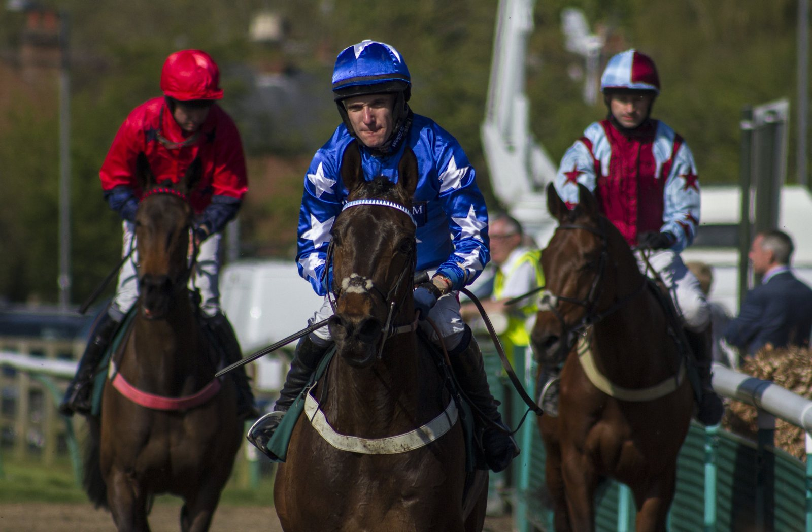

Dos de O'Brien y dos de Appleby: el Dewhurst de Newmarket enfrenta a Darkness Falls y Desert Castle
Aidan O'Brien y Charlie Appleby ensillan dos potros cada uno en el Darley Dewhurst (G1) del sábado, eje del Future Champions Festival de Newmarket, que abre el viernes con el Fillies' Mile.

Son cinco los inscritos para los siete furlongs del Rowley Mile, y cuatro salen de dos cuadras. Por Ballydoyle llega Darkness Falls, hijo de Camelot y ganador del Golden Fleece (G1). Le acompaña Great Barrier Reef, hijo de No Nay Never, que se adjudicó el Coventry (G2).
Chris Armstrong dio el parte de ambos: «Darkness Falls ha salido muy bien de Leopardstown, sus trabajos han sido buenos desde entonces y el Dewhurst estaba en su agenda desde hace tiempo». Sobre el segundo añadió: «Great Barrier Reef también está en buena forma desde su última carrera y el plan ahora es subirle de distancia».
Appleby persigue su cuarta victoria en la prueba, que ya se llevó con Pinatubo, Native Trail y Shadow Of Light. Su primera baza es Desert Castle, hijo de Frankel y ganador del Champagne (G2), con William Buick en la silla. Billy Loughnane monta a Jassas, hijo de Dubawi y segunda opción de la cuadra.
Cierra la lista Gentle Hurricane, hijo de Invincible Spirit, de la señora Alanood Althani y preparado por Andrew Balding. Fue segundo en el Acomb (G3) y cuarto en aquel Champagne que ganó Desert Castle, así que el sábado vuelve a medirse con un rival conocido.
La víspera, el Fillies' Mile (G1) reúne a ocho potrancas. Encabeza el lote Musical Times, de Godolphin, hija de Lope De Vega y ganadora del May Hill (G2). No corre desde que se impuso por siete cuerpos y medio en Doncaster, durante la reunión del St Leger.
Enfrente tendrá a Forbidden Fire (No Nay Never), ganadora del Listed Flying Scotsman. También a Lex Victoria (Sioux Nation), de Victorious Forever, y a Rogue Passion (Sioux Nation), que se llevó el Prix d'Aumale (G3). Completa el grupo de aspirantes Dancing Destiny (Magna Grecia), tercera en el Moyglare (G1).
Por Martín Larrañeta